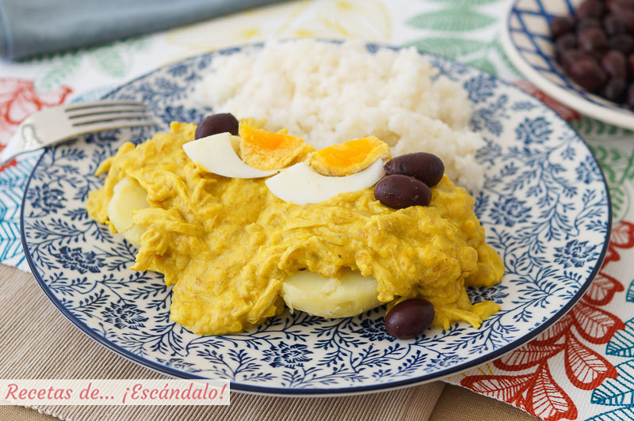

Peruvian spicy cream chicken (Ají de gallina) recipe

Description
Get ready to explore the rich and diverse flavors of Peruvian cuisine with the traditional and beloved dish, Aji de Gallina. As an experienced Peruvian chef, I am excited to share with you my take on this iconic Peruvian recipe that features tender shredded chicken in a creamy and spicy sauce made with aji amarillo peppers, milk, bread, and nuts. This dish is typically served over steamed white rice and garnished with boiled eggs and olives. In this recipe, I will guide you through the steps to create a flavorful Aji de Gallina that will transport your taste buds to the heart of Peru. Get ready to experience the magic of this iconic Peruvian dish and impress your guests with your culinary skills!
Ingredients
- 1 skinless chicken breast
- 3 cups water
- Salt and pepper
- 3 slices white bread
- ¼ cup vegetable oil
- ½ red onion finely chopped
- 2 garlic cloves, finely chopped
- 1 tablespoon aji amarillo chili pepper
- 1 tablespoon aji¬ mirasol chili pepper
- ½ teaspoon dried oregano
- ½ cup pecans, finely chopped
- ½ cup evaporated milk or Half & Half
- ½ cup Parmesan cheese, grated
- 2 hard boiled eggs
- 2 potatoes, cooked in boiling water, peeled
- 4 black olives
- Parsley sprigs for decoration
- 2 cups cooked white rice
Steps
- In a heavy saucepan, cook the chicken breast in the water with salt and pepper, uncovered and over high heat (about 20 minutes). If you wish to add a parsley sprig or a bay leaf, you can and the resulting stock will be more flavorful.
- When it is tender, take out the cooked breast, shred the meat with two forks or with your fingers and reserve. Strain the stock.
- Put the bread slices in a bowl and add one cup of the stock. When the bread has soaked all the stock, process in a blender to form a loose paste. Reserve.
- In the same saucepan you used, heat the oil and cook the onion and garlic over medium heat (about 10 minutes). Stir continuously and don´t let them brown. When they are very soft and almost transparent, add and stir the aji¬ amarillo chili pepper and aji¬ mirasol, then add the dried oregano and keep cooking for 5 minutes.
- Add the bread and one more cup of chicken stock to the pan, (always stirring) for 3 more minutes or until the mixture starts to thicken
- Add and stir the shredded chicken, pecans, and cheese. Season with salt and pepper but be careful because the cheese is already salty.
- Finally incorporate the evaporated milk or Half & Half, stir and turn off the heat. If it looks too thick, thin it with more chicken stock. The sauce should be creamy, like every piece of chicken is covered with the velvety sauce.
- Cut the cooked potatoes in thick slices and put 2 pieces on every plate. Cover with the Aji de Gallina and serve with white rice at the side.
- Decorate with hard boiled eggs cut in half or quarters, black olives and a parsley sprig.
The contents of this recipe are heavily inspired by the Aji de Gallina - Reloaded recipe, on the Peru Delighs website.
Back